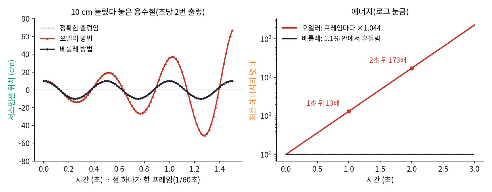
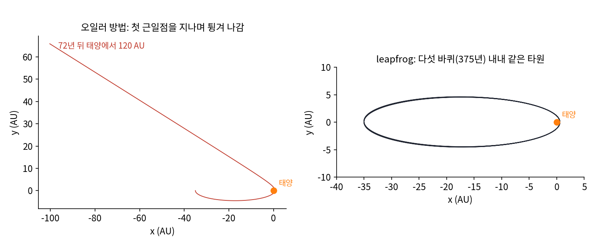
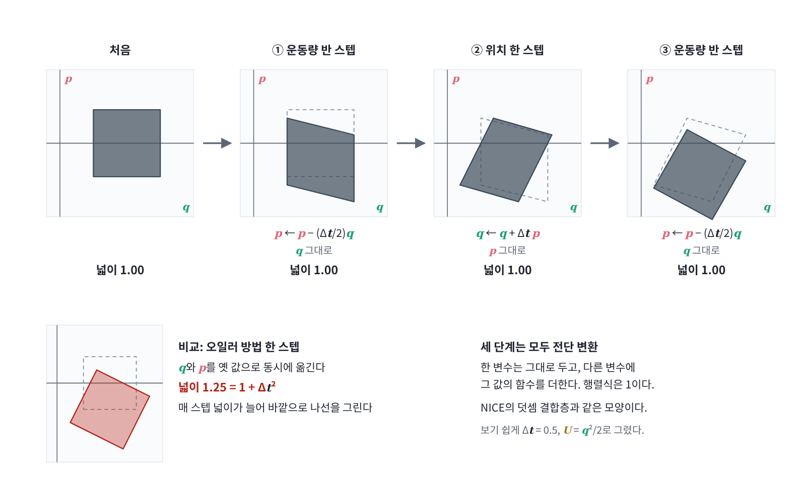
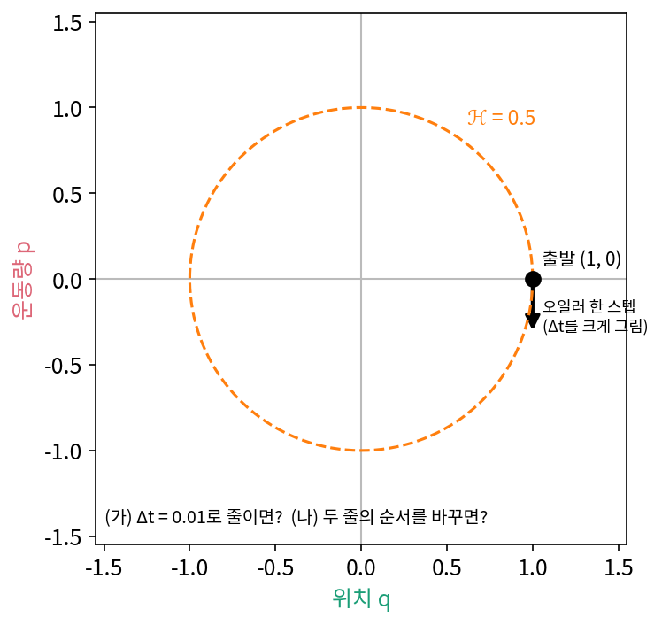
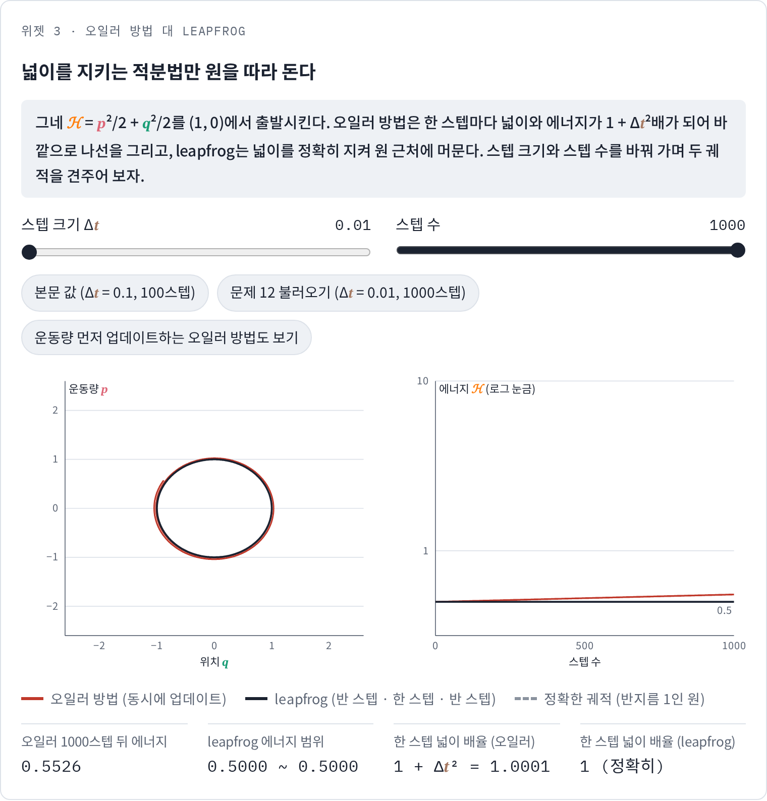

leapfrog: 넓이를 지키는 적분법
지금까지는 해밀턴 흐름을 정확한 해로 따라갔다. 하지만 HMC처럼 공을 굴리는 계산을 컴퓨터로 하려면 시간을 Δt 간격으로 잘라야 한다. 잘라서 한 스텝씩 옮기는 계산도 해밀턴 흐름처럼 넓이와 에너지를 지킬까?
오일러 방법과 leapfrog
가장 먼저 떠오르는 방법은 지금의 속도로 위치와 운동량을 한꺼번에 옮기는 오일러 방법(Euler method)이다. 다른 방법은 운동량을 반 스텝 옮기고, 새 운동량으로 위치를 한 스텝 옮긴 뒤, 새 위치에서 운동량을 다시 반 스텝 옮기는 leapfrog 방법 (개구리가 번갈아 뛰어넘듯 위치와 운동량을 엇갈려 업데이트하는 적분법)이다. 두 방법으로 그네(E = p²/2 + q²/2)를 Δt = 0.1로 적분하고, 에너지와 한 스텝이 넓이를 몇 배로 바꾸는지 비교해 보자.
import numpy as np
def grad_U(q): # U(q) = q²/2 (그네, m = ω = 1)
return q
def euler(q, p, dt): # 위치와 운동량을 동시에 옛 값으로 업데이트
return q + dt * p, p - dt * grad_U(q)
def leapfrog(q, p, dt): # 반 스텝 차기 → 한 스텝 이동 → 반 스텝 차기
p = p - 0.5 * dt * grad_U(q)
q = q + dt * p
p = p - 0.5 * dt * grad_U(q)
return q, p
H = lambda q, p: 0.5 * p**2 + 0.5 * q**2
dt = 0.1
for step in (euler, leapfrog):
q, p = 1.0, 0.0
for n in range(1, 1001):
q, p = step(q, p, dt)
if n in (100, 1000):
print(step.__name__, n, round(H(q, p), 4))
# 한 스텝 변환의 자코비안 행렬식 (넓이 배율), 수치 미분으로
e = 1e-6
J = np.array([np.subtract(step(1 + e, 0.3, dt), step(1, 0.3, dt)),
np.subtract(step(1, 0.3 + e, dt), step(1, 0.3, dt))]).T / e
print(step.__name__, "det J =", round(np.linalg.det(J), 6))
# euler 100 1.3524
# euler 1000 10479.5778
# euler det J = 1.01
# leapfrog 100 0.4996
# leapfrog 1000 0.4997
# leapfrog det J = 1.0
처음 에너지는 0.5인데, 오일러 방법으로는 100스텝 뒤에 1.3524, 1000스텝 뒤에는 10479.58이 되어 그네가 하늘 끝까지 날아간다. 이유는 행렬식에 있다. 이 그네에서 오일러 방법의 한 스텝은 (q, p)에 행렬 [[1, Δt], [−Δt, 1]]을 곱하는 것이고, 그 행렬식은 1 + Δt² = 1.01이다. 한 스텝마다 넓이가 1% 늘어나니 상태는 원을 따라 돌지 못하고 바깥으로 나선을 그리며, 에너지도 매 스텝 1.01배가 되어 0.5 × 1.01^100 = 1.3524가 된다.
leapfrog의 행렬식은 왜 1일까?
반면 leapfrog는 같은 그래디언트를 쓰고 업데이트 순서만 바꿨을 뿐인데 행렬식이 정확히 1이다. 왜 넓이가 늘지 않을까? 세 단계가 각각 운동량만 바꾸거나 위치만 바꾸는 전단 변환(한 변수를 다른 변수의 함수만큼 밀어 주는 변환, shear map)이고, 그런 변환의 자코비안 행렬은 대각선이 모두 1인 삼각행렬이라 행렬식이 1이기 때문이다. 이렇게 넓이를 정확히 지키는 적분법을 심플렉틱 적분법 (위상공간의 넓이 구조를 보존하는 적분법, symplectic integrator)이라 한다. 에너지는 0.5에서 조금씩 흔들리지만 10만 스텝을 가도 0.49875와 0.5 사이를 벗어나지 않는다. 사실 이 그네에서 leapfrog는 조금 변형된 에너지 p²/(2(1 − Δt²/4)) + q²/2를 정확히 보존하므로 진짜 에너지도 멀리 벗어날 수 없다.
게임 속 래그돌: 1초에 60번 고치는 위치
액션 게임에서 쓰러진 캐릭터가 계단을 굴러떨어지며 팔다리가 제멋대로 꺾이는 장면을 본 적이 있을지 모른다. 래그돌(ragdoll, 헝겊 인형) 물리라 부르는 이 움직임도 화면 뒤에서는 방금 본 적분법 문제를 푼다. 게임은 정해진 짧은 시간마다, 예를 들어 1초에 60번 물체의 위치를 고쳐 그린다. 해밀턴 흐름을 Δt = 1/60초로 잘라 한 스텝씩 따라가는 것이다.
숫자로 보자. 게임 속 자동차의 서스펜션 용수철이 초당 2번 출렁인다고 하자. 이 용수철을 10 cm 눌렀다 놓고 오일러 방법으로 1초에 60번 위치를 고치면, 한 프레임의 넓이 배율이자 에너지 배율은 1 + (2π × 2 × 1/60)² = 1.044다. 에너지는 0.5초 뒤 3.6배, 1초 뒤 13.1배, 2초 뒤 173배가 되고, 10 cm였던 출렁임은 1초 뒤 35.7 cm, 2초 뒤 1.23 m로 커진다. 세워 둔 차가 혼자 튀어 오르기 시작하는 것이다.
2001년 게임 개발자 회의(GDC)에서 IO 인터랙티브의 토마스 야콥센은 「히트맨: 코드네임 47」(2000)을 위해 만든 캐릭터 물리를 소개했다. 그가 쓴 식은 속도를 따로 저장하지 않고, 지난 위치와 지금 위치로 다음 위치를 정한다.
지난 위치와 지금 위치로 다음 위치를 정하는 계산법을 베를레 방법이라 부른다. 두 프레임 사이의 속도 (다음 위치 − 지금 위치)/Δt를 반 스텝 운동량으로 읽으면, 반 스텝 운동량에 가속도 × Δt를 더하고 그 운동량으로 위치를 한 스텝 옮기는 leapfrog와 같은 계산이다. 같은 서스펜션 용수철을 베를레 방법으로 돌리면 1000초(6만 프레임)가 지나도 출렁임은 10 cm를 넘지 않고, 에너지는 처음 값의 98.9%와 100% 사이에서만 흔들린다. 1.1%는 앞에서 본 변형된 에너지 식의 Δt 자리에 2π × 2 × Δt를 넣은 (0.209)²/4다. 야콥센은 이 방법이 늘 정확하지는 않지만 빠르고 안정적이라고 적었다. 게임에는 몇 시간을 켜 두어도 차가 혼자 튀어 오르지 않는 것이 정확도보다 먼저였고, 넓이를 지키는 적분법이 그 요구를 채운다.

넓이를 지킨다고 스텝을 마음대로 키울 수 있는 것은 아니다. 같은 1/60초 간격으로 초당 19번 떠는 뻣뻣한 용수철은 베를레 방법으로도 10 cm 안에서 버티지만, 초당 20번이 되면 1초 만에 출렁임이 10¹⁶ cm 단위로 터진다. leapfrog는 2π × 진동수 × Δt가 2보다 작을 때만 원을 따라 돌고, 2를 넘으면 행렬식이 1이어도 상태가 바깥으로 튕겨 나간다.
역사: 여러 번 다시 발견된 적분법
leapfrog는 한 사람이 만든 방법이 아니다. 오랜 시간에 걸친 궤도를 손으로, 뒤에는 컴퓨터로 따라가야 했던 사람들이 저마다 같은 계산법에 이르렀다. 1790년대 초 프랑스의 천문학자 들랑브르는 로그표와 천문표를 계산하며 이미 이 방법을 썼고, 1907년 노르웨이의 수학자 스퇴르메르는 오로라를 설명하려고 태양에서 날아온 전기 띤 알갱이가 지구 자기장 속에서 그리는 궤도를 이 방법을 다듬은 셈법으로 계산했다. 1909년 영국의 코웰과 크로멜린은 이듬해 돌아올 핼리 혜성의 궤도를 이 방법으로 계산했고, 1960년대에는 프랑스의 물리학자 베를레가 분자들이 서로 밀고 당기는 액체를 컴퓨터로 흉내 내며(분자 동역학) 다시 찾아냈다. 그래서 이 방법은 오늘날 스퇴르메르–베를레 방법이라고도 불린다. 궤도를 오래 따라가야 한다는 같은 고민이 같은 답을 여러 번 불러냈다.


코드로 세 줄인데 여러 번 다시 발견됐다는 게 좀 이상해요. 논문에 한 번 나오면 다들 가져다 쓰지 않아요?

지금은 검색 한 번이면 찾지요. 들랑브르는 천문표, 스퇴르메르는 오로라, 코웰과 크로멜린은 혜성, 베를레는 액체를 다뤘어요. 서로의 글을 읽을 일이 있었을까요?

분야가 다 달라서 같은 방법인 줄도 몰랐겠네요. 그래도 다들 이 방법에 닿은 게 우연은 아닐 것 같은데요.

공통점을 찾아봐요. 네 경우 모두 무엇을 오래 따라가야 했죠?

궤도요. 핼리 혜성은 76년마다 돌아오니까 스텝을 엄청 많이 밟아야 하고, 손으로 하면 한 스텝 한 스텝이 다 일이었겠어요. 오일러 방법처럼 매 스텝 넓이가 1%씩 늘면 끝까지 못 가고요.

그런데 그때는 이 방법이 왜 오래 가도 터지지 않는지 설명할 말이 없었어요. 잘 맞으니까 썼던 거예요. 넓이를 지킨다는 설명은 한참 뒤에 붙었고요.

그럼 넓이를 지켜야 하는 다른 계산도, leapfrog처럼 한 번에 한쪽 변수만 바꾸는 단계로 쪼개면 되는 거예요?
ML에서: 넓이를 지키는 결합층
이산 normalizing flow의 초기 모델인 NICE(Dinh 외, 2014)의 덧셈 결합층(additive coupling layer)은 입력을 두 부분으로 나눠 한쪽을 그대로 두고 다른 쪽에 신경망 출력을 더하므로, 자코비안 행렬식이 1인 부피 보존 변환이다. 덧셈 결합층은 leapfrog의 반 스텝과 같은 모양이다. leapfrog의 반 스텝은 위치는 그대로 두고 운동량에 −(Δt/2)∇U(q)를 더하는 전단 변환이다. leapfrog 한 스텝은 신경망 대신 정해진 함수(위치에너지의 그래디언트와 운동량)를 쓴 결합층 세 개를 쌓은 것이라고 볼 수 있다.

문제 12. 스텝을 줄이면 해결될까
그네(ℋ = p²/2 + q²/2)를 q = 1, p = 0에서 출발시켜 오일러 방법(q ← q + Δt·p, p ← p − Δt·q를 동시에)으로 적분하면 Δt = 0.1에서 에너지가 매 스텝 1.01배가 된다. (가) 스텝을 Δt = 0.01로 줄여 시간 10까지 가면 에너지는 얼마인가? 시간 1000까지 가면? (나) 스텝 크기는 0.1 그대로 두고 두 줄의 순서만 바꿔, 운동량을 먼저 업데이트한 뒤 새 운동량으로 위치를 옮기면 에너지는 어떻게 되는가? 이때 한 스텝은 넓이를 몇 배로 바꾸는가? (풀어 본 뒤 위젯 3의 「문제 12 불러오기」로 확인해 보자.)


스텝이 너무 커서 그래요. Δt = 0.01로 줄여서 같은 시간 10까지 1000스텝 돌렸더니 0.5526이에요. 훨씬 낫죠. 더 줄이면 0.5에 붙을 거예요.

한 스텝마다 에너지가 1 + Δt²배가 되잖아. 시간 t까지 가면 스텝이 t/Δt번이니까 (1 + Δt²)^(t/Δt)배….

Δt가 작을 때 (1 + Δt²)^(t/Δt)를 근사하면요?

대략 e^(Δt·t)배예요. Δt = 0.01이면 시간 10에서는 e^0.1 ≈ 1.105배라 괜찮아 보이는데, 시간 1000까지 가면 e^10배예요.

돌려 볼게요… 10만 스텝 뒤에 11007.7이요. 어, 그네가 또 날아갔어요.

스텝을 줄이면 날아가는 시점을 늦출 뿐 막지는 못해요. HMC나 분자 시뮬레이션처럼 오래 굴려야 하는 곳에서는 치명적이죠. 민준 학생, 코드에서 한 줄만 바꿔 볼까요? 운동량을 먼저 업데이트하고, 위치는 새 운동량으로 옮기는 거예요.

p ← p − Δt·q를 먼저 하고 q ← q + Δt·p를 새 p로… Δt = 0.1로 10만 스텝 돌렸는데 에너지가 0.476과 0.526 사이에서만 왔다 갔다 해요. 한 줄 순서만 바꿨는데요?
민준아, 행렬식을 봐. 운동량만 바꾸는 단계는 [[1, 0], [−Δt, 1]]이고, 이건 행렬식이 1이야.

위치만 바꾸는 단계는 [[1, Δt], [0, 1]]이니까 이것도 1이네. 그럼 처음 방법은?
동시에 업데이트한 원래 방법은 [[1, Δt], [−Δt, 1]]이라 1 + Δt²이었고.
그래요. 넓이가 매 스텝 1%씩 늘면 상태는 나선을 그리며 바깥으로 나갈 수밖에 없어요. 넓이를 바꾸지 않는 적분법이 심플렉틱 적분법이고, 방금 민준 학생이 만든 것과 leapfrog가 대표적이에요.
게임 물리 엔진도 이 순서로 계산해요. 2차원 물리 엔진 Box2D의 코드는 힘으로 속도를 먼저 고치고, 위치는 그 새 속도로 옮겨요. 아까 그 서스펜션 용수철을 이 순서로 1초에 60번 돌리면 어떻게 될까요?
1000초를 돌렸는데 에너지가 처음의 0.905배와 1.117배 사이에서만 오가요. 오일러 방법으로는 1초 만에 13배였는데요.

그런데 넓이를 지킨다고 에너지까지 지키는 건 아니잖아요. 0.476에서 0.526까지 흔들리는 걸 보면요.
맞아요. 넓이 보존과 에너지 보존은 다른 성질이에요. 다만 심플렉틱 적분법은 원래 에너지와 조금 다른 「변형된 에너지」를 거의 정확히 보존해서, 진짜 에너지가 한쪽으로 흘러가지 않고 그 근처에서 흔들리기만 해요. 그리고 leapfrog는 앞뒤가 대칭이라 흔들리는 폭도 훨씬 작아요. 같은 Δt에서 0.49875에서 0.5 사이였죠.

과제에서 시뮬레이션이 터지면 늘 학습률 줄이듯이 Δt부터 줄였는데, 적분법 자체를 바꿔야 하는 경우가 있네요.
